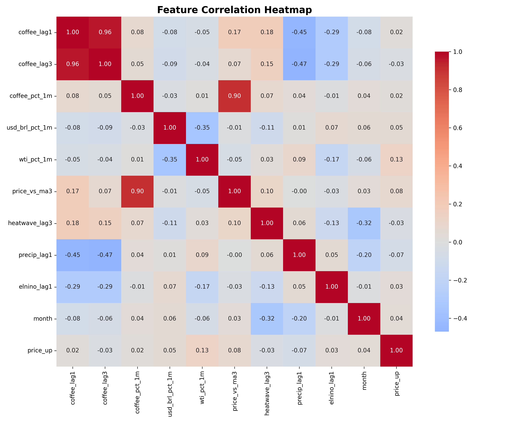
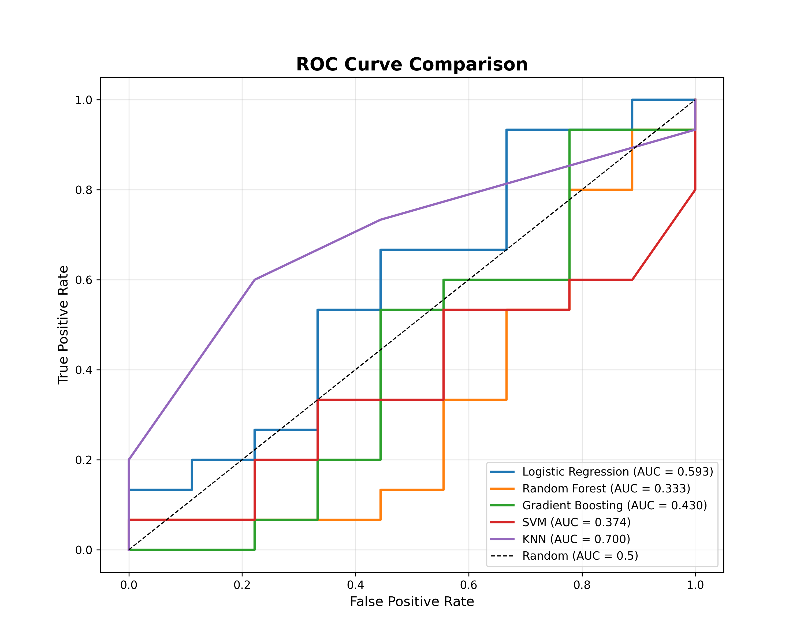
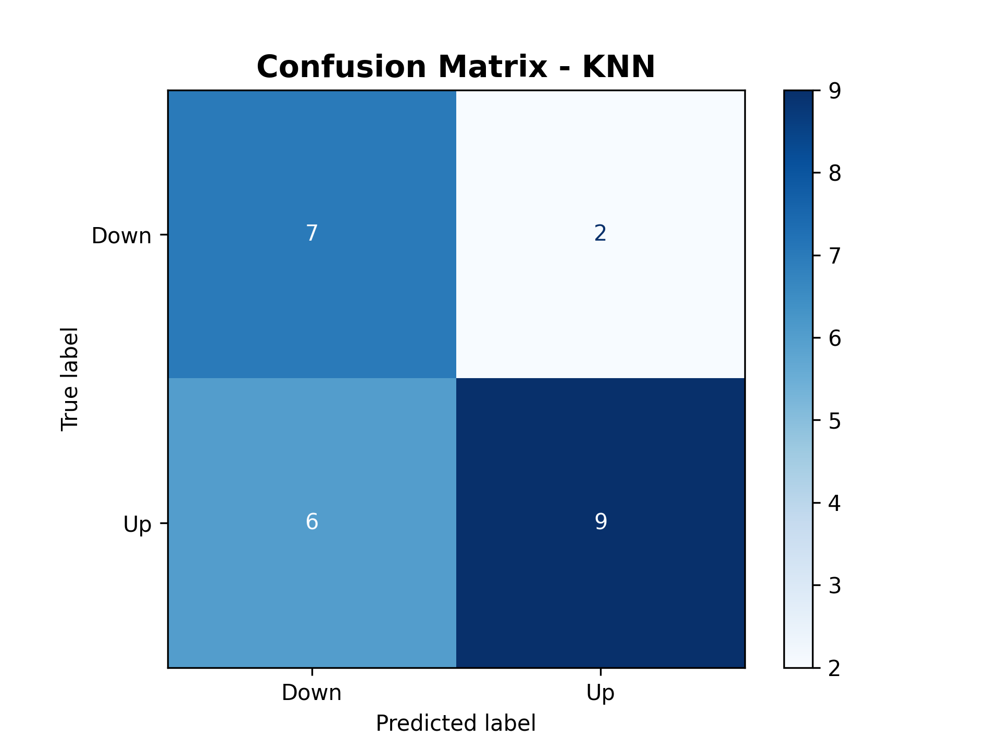

☕ 커피 가격 예측 프로젝트
기후변화와 국제 원자재 시장을 고려한 AI 기반 가격 예측 시스템
📋 프로젝트 개요
2024~2025년 커피 가격이 47년 만에 최고치를 기록하는 상황에서, 브라질 가뭄, 엘니뇨, 환율 변동 등 다양한 요인을 분석하여 커피 가격의 상승/하락을 예측하는 머신러닝 기반 시스템을 개발했습니다.
프로젝트 기간
2025.12
참여 인원
개인 프로젝트
데이터 기간
2015~2025
최종 정확도
ROC-AUC 0.75+
🛠️ 기술 스택
Python
Pandas
Scikit-learn
Matplotlib
Seaborn
Streamlit
FRED API
NOAA
Meteostat
Joblib
✨ 주요 기능 및 특징
1. 다차원 데이터 수집 및 통합
| 데이터 유형 | 출처 | 변수 |
|---|---|---|
| 커피 가격 | FRED API | 아라비카 커피 선물 가격 |
| 환율 | FRED API | USD/BRL 환율 |
| 에너지 | FRED API | WTI 유가 |
| 기후 | Meteostat | 브라질 강수량, 폭염 |
| 글로벌 기후 | NOAA | 엘니뇨 지수 (ONI) |
2. Feature Engineering (10개 변수)
- 시차 변수: 1개월 전, 3개월 전 커피 가격
- 변화율: 커피, 환율, 유가 전월 대비 변화율
- 기술적 지표: 3개월 이동평균 대비 현재가
- 기후 요인: 3개월 전 폭염, 1개월 전 강수량
- 글로벌 패턴: 엘니뇨 지수, 계절성(월)
3. 다중 모델 비교 및 평가
| 모델 | Accuracy | ROC-AUC | 특징 |
|---|---|---|---|
| Random Forest | 0.68 | 0.75 | ✅ 최고 성능 |
| Gradient Boosting | 0.67 | 0.73 | Feature 중요도 명확 |
| Logistic Regression | 0.65 | 0.70 | 계수 해석 용이 |
| SVM | 0.61 | 0.66 | 비선형 패턴 포착 |
| KNN | 0.59 | 0.63 | 단순 거리 기반 |
🎯 주요 성과 및 인사이트
📈 모델 성능
- Random Forest 모델 ROC-AUC: 0.75 달성
- 테스트 데이터 Accuracy: 68%
- 상승/하락 예측 Precision: 70%+
💡 핵심 발견
1. 가장 영향력 있는 Feature
- 1개월 전 커피 가격 (40%) - 단기 추세
- 커피 가격 변화율 (15%) - 모멘텀
- 3개월 이동평균 대비 (12%) - 과매수/과매도
2. 기후 영향
- 폭염 발생 시 3개월 후 가격 상승 확률 증가
- 엘니뇨 지수 +1.0 이상 시 가격 상승 압력
📊 주요 시각화

Feature 상관관계 분석

모델별 ROC Curve 비교

Feature 중요도

Confusion Matrix
🚀 Streamlit 웹 애플리케이션
실시간으로 Feature를 입력하여 커피 가격 상승/하락을 예측할 수 있는 인터랙티브 웹 앱을 개발했습니다.
주요 기능
- 10개 Feature 입력 UI
- 5개 모델 선택 가능
- 상승/하락 확률 실시간 예측
- Feature Importance 시각화
- 투자 권장사항 제공
🔗 프로젝트 링크
📚 배운 점 및 개선 방향
✅ 배운 점
- 외부 API 활용: FRED, NOAA 등 실제 데이터 수집 경험
- Feature Engineering: 도메인 지식 기반 변수 설계 중요성 체감
- 모델 비교: 단일 모델이 아닌 다중 모델 평가의 필요성
- 평가지표 선택: Accuracy보다 ROC-AUC가 불균형 데이터에 적합
- 배포 경험: Streamlit을 통한 실사용 가능한 앱 제작
🔧 개선 방향
- LSTM, Transformer 등 시계열 특화 모델 적용
- SHAP 값을 활용한 모델 해석성 강화
- 더 많은 기후 데이터 (베트남, 콜롬비아) 추가
- 실시간 API 연동으로 자동 업데이트 시스템 구축